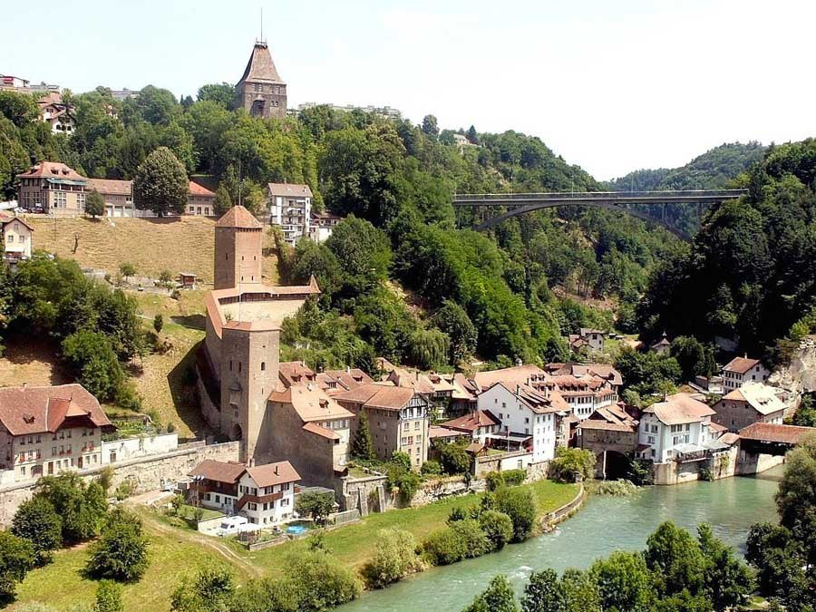

Présentation de Fribourg

Une cité naturellement ouverte sur le monde Fondée en 1157 par le duc Berthold IV de Zaehringen, Fribourg a constitué pendant plus de six siècles une Ville-État. Centre de décision administratif du canton, Fribourg et son agglomération de 80’000 habitants se distinguent par un rayonnement culturel et un dynamisme économique de premier ordre. Pour appréhender Fribourg et ses spécificités, il convient de souligner sa dimension spirituelle et son activité artistique foisonnante. Les rivalités confessionnelles au temps de la Réforme et de la Contre-Réforme entraînent, sur les bords de la Sarine, la création du Collège Saint-Michel attaché à la formation des élites du canton. Fleuron de l’enseignement de la ville, l’institution des Jésuites a donné naturellement lieu à la fondation de l’Université en 1889, afin de répondre aux besoins croissants d’un canton en pleine mutation. Joyau médiéval et pépinière de jeunes pousses, la ville dispose de nos jours, avec son Alma Mater, rare exemple en Europe d’une Haute École bilingue, de plusieurs sites d’excellence qui font autorité sur le plan international, à l’instar de ses autres établissements d’enseignement supérieur. À dimension humaine, Fribourg offre une qualité de vie enviable, tout en misant sur un développement économique harmonieux, au point de rencontre des Suisses romande et alémanique. Quant au patrimoine architectural, celui-ci a été salué par les instances européennes pour sa beauté et sa préservation.